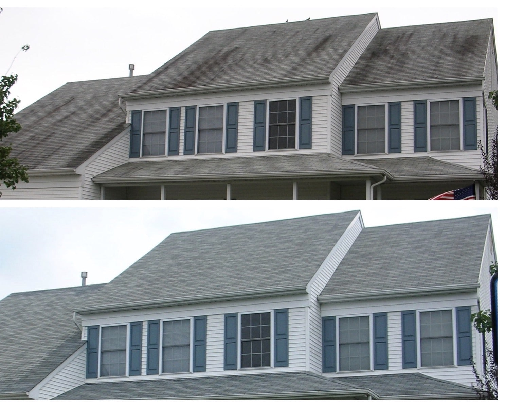
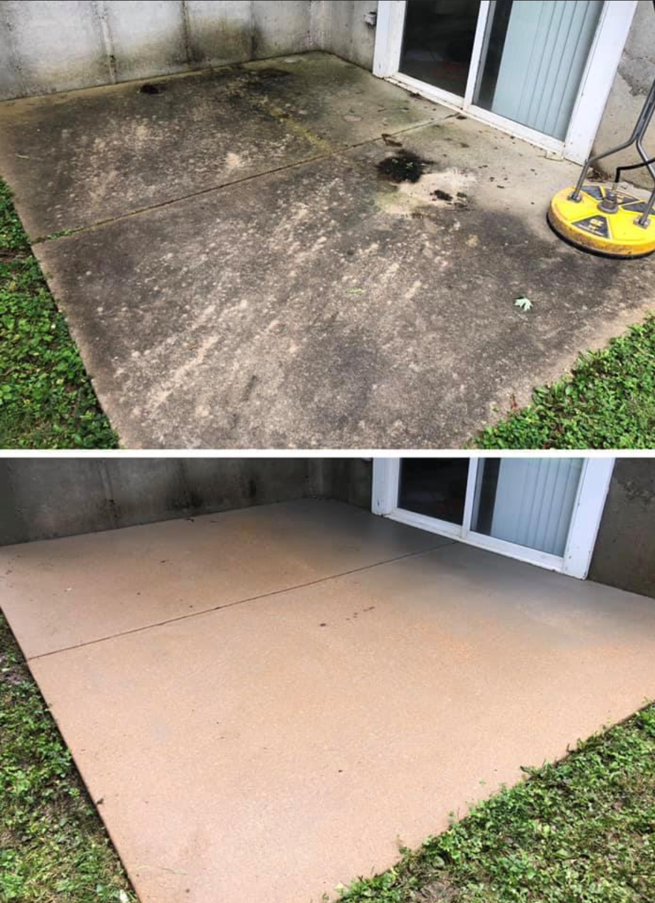

Using our different soaps and chemicals, and our machines at low or high pressures,
we provide multiple types of washes for different surfaces.
We are able to clean different types of house siding
including vinyl, brick, and stucco.
Using low pressure, our soap and chemicals will clean
off the mildew, algae, and other organic growth on your roof.

For wooden decks and fences, we use a bleach free process
to wash the deck, and post treat with a wood brightener.

We will use a process of pre-treating your concrete,
running our commercial grade surface cleaner, and finishing
it off with a post-treatment to prevent future organic growth.

Some stains on your property are not organic, and require a separate process to remove.